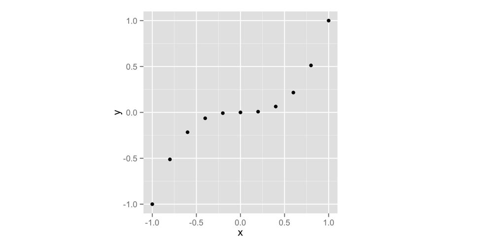
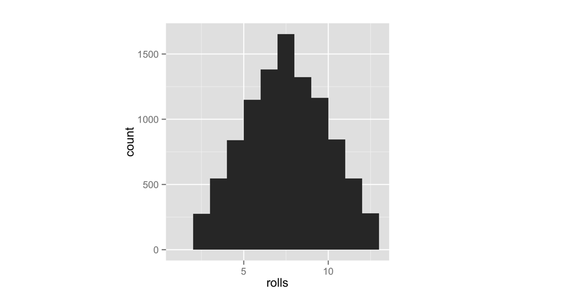

2 Paquetes y páginas de ayuda
Ahora tiene una función que simula lanzar un par de dados. Hagamos las cosas un poco más interesantes ponderando los dados a tu favor. La casa siempre gana, ¿verdad? Hagamos que los dados arrojen números altos un poco más a menudo que los números bajos.
Antes de ponderar los dados, debemos asegurarnos de que sean justos para empezar. Dos herramientas te ayudarán a hacer esto: repetición y visualización. Por coincidencia, estas herramientas también son dos de los superpoderes más útiles en el mundo de la ciencia de datos.
Repetiremos nuestras tiradas de dados con una función llamada replicate y visualizaremos nuestras tiradas con una función llamada qplot. qplot no viene con R cuando lo descargas; qplot viene en un paquete de R independiente. Muchas de las herramientas de R más útiles vienen en paquetes de R, así que tomemos un momento para ver qué son los paquetes de R y cómo puede usarlos.
2.1 Paquetes
No es la única persona que escribe sus propias funciones con R. Muchos profesores, programadores y estadísticos usan R para diseñar herramientas que pueden ayudar a las personas a analizar datos. Luego hacen que estas herramientas sean gratuitas para que cualquiera las use. Para usar estas herramientas, solo tienes que descargarlas. Vienen como colecciones preensambladas de funciones y objetos llamados paquetes. Apéndice 2: Paquetes de R contiene instrucciones detalladas para descargar y actualizar paquetes R, pero aquí veremos los conceptos básicos.
Vamos a usar la función qplot para hacer algunos gráficos rápidos. qplot viene en el paquete ggplot2, un paquete popular para hacer gráficos. Antes de que pueda usar qplot, o cualquier otra cosa en el paquete ggplot2, debe descargarlo e instalarlo.
2.1.1 install.packages
Cada paquete R está alojado en http://cran.r-project.org, el mismo sitio web que aloja R. Sin embargo, no necesita visitar el sitio web para descargar un paquete R; puede descargar paquetes directamente desde la línea de comandos de R. Así es cómo:
- Abre RStudio.
- Asegúrate de estar conectado a Internet.
- Ejecute
install.packages("ggplot2")en la línea de comando.
Eso es. R hará que su computadora visite el sitio web, descargue ggplot2 e instale el paquete en su disco duro justo donde R quiere encontrarlo. Ahora tiene el paquete ggplot2. Si desea instalar otro paquete, reemplace ggplot2 con el nombre de su paquete en el código.
2.1.2 library
La instalación de un paquete no pone sus funciones al alcance de su mano todavía: simplemente las coloca en su disco duro. Para usar un paquete de R, luego debe cargarlo en su sesión de R con el comando library("ggplot2"). Si desea cargar un paquete diferente, reemplace ggplot2 con el nombre de su paquete en el código.
Para ver lo que esto hace, intente un experimento. Primero, pide a R que te muestre la función qplot. R no podrá encontrar qplot porque qplot vive en el paquete ggplot2, que no ha cargado:
qplot
## Error: object 'qplot' not foundAhora cargue el paquete ggplot2:
library("ggplot2")Si instaló el paquete con install.packages según las instrucciones, todo debería ir bien. No se preocupe si no ve ningún resultado o mensaje. No tener noticias es una buena noticia a la hora de cargar un paquete. No se preocupe si ve un mensaje tampoco; ggplot2 a veces muestra mensajes de inicio útiles. Mientras no vea nada que diga “Error”, lo está haciendo bien.
Ahora, si pide ver qplot, R le mostrará bastante código (qplot es una función larga):
qplot
## (quite a bit of code)Apéndice 2: Paquetes de R contiene muchos más detalles sobre la adquisición y el uso de paquetes. Le recomiendo que lo lea si no está familiarizado con el sistema de paquetes de R. Lo más importante que debe recordar es que solo necesita instalar un paquete una vez, pero debe cargarlo con library cada vez que desee usarlo en una nueva sesión de R. R descargará todos sus paquetes cada vez que cierre RStudio.
Ahora que ha cargado qplot, vamos a probarlo. qplot hace “gráficos rápidos”. Si le das a qplot dos vectores de igual longitud, qplot dibujará un diagrama de dispersión por ti. qplot usará el primer vector como un conjunto de valores x y el segundo vector como un conjunto de valores y. Busque el gráfico que aparecerá en la pestaña Gráficos del panel inferior derecho de la ventana de RStudio.
El siguiente código creará el gráfico que aparece en la Figura Figura 2.1. Hasta ahora, hemos estado creando secuencias de números con el operador :; pero también puedes crear vectores de números con la función c. Proporcione a c todos los números que desea que aparezcan en el vector, separados por una coma. c significa concatenar, pero puedes pensar en ello como “recolectar” o “combinar”:
x <- c(-1, -0.8, -0.6, -0.4, -0.2, 0, 0.2, 0.4, 0.6, 0.8, 1)
x
## -1.0 -0.8 -0.6 -0.4 -0.2 0.0 0.2 0.4 0.6 0.8 1.0
y <- x^3
y
## -1.000 -0.512 -0.216 -0.064 -0.008 0.000 0.008
## 0.064 0.216 0.512 1.000
qplot(x, y)No necesitas nombrar tus vectores x e y. Solo hice eso para aclarar el ejemplo. Como puede ver en la figura Figura 2.1, un diagrama de dispersión es un conjunto de puntos, cada uno representado de acuerdo con sus valores x e y. Juntos, los vectores x e y describen un conjunto de 10 puntos. ¿Cómo hizo coincidir R los valores en x e y para hacer estos puntos? Con ejecución por elementos, como vimos en la Figura Figura 1.3.
Los diagramas de dispersión son útiles para visualizar la relación entre dos variables. Sin embargo, vamos a utilizar un tipo diferente de gráfico, un histograma. Un histograma visualiza la distribución de una sola variable; muestra cuántos puntos de datos aparecen en cada valor de x.
Echemos un vistazo a un histograma para ver si esto tiene sentido. qplot hará un histograma cada vez que le des solo un vector para graficar. El siguiente código crea el gráfico de la izquierda en la Figura Figura 2.2 (nos preocuparemos del gráfico de la derecha en un segundo). Para asegurarse de que nuestros gráficos tengan el mismo aspecto, utilice el argumento extra binwidth = 1:
x <- c(1, 2, 2, 2, 3, 3)
qplot(x, binwidth = 1)Este gráfico muestra que nuestro vector contiene un valor en el intervalo [1, 2) colocando una barra de altura 1 sobre ese intervalo. De manera similar, la gráfica muestra que el vector contiene tres valores en el intervalo [2, 3) colocando una barra de altura 3 en ese intervalo. Muestra que el vector contiene dos valores en el intervalo [3, 4) colocando una barra de altura 2 en ese intervalo. En estos intervalos, el corchete, [, significa que el primer número está incluido en el intervalo. El paréntesis, ), significa que el último número no está incluido.
Probemos con otro histograma. Este código crea el gráfico de la derecha en la Figura Figura 2.2. Observe que hay cinco puntos con un valor de 1 en x2. El histograma muestra esto trazando una barra de altura 5 sobre el intervalo x2 = [1, 2):
x2 <- c(1, 1, 1, 1, 1, 2, 2, 2, 2, 3, 3, 4)
qplot(x2, binwidth = 1)Ejercicio 3.1 (Visualizar un Histograma) Sea x3 el siguiente vector:
x3 <- c(0, 1, 1, 2, 2, 2, 3, 3, 4)
Imagina cómo se vería un histograma de x3. Suponga que el histograma tiene un ancho de intervalo de 1. ¿Cuántas barras tendrá el histograma? ¿Dónde aparecerán? ¿Qué altura tendrá cada uno?
Cuando haya terminado, trace un histograma de x3 con binwidth = 1, y vea si tiene razón.
Solución. Puedes hacer un histograma de x3 con qplot(x3, binwidth = 1). El histograma se verá como una pirámide simétrica. La barra del medio tendrá una altura de 3 y aparecerá encima de [2, 3), pero asegúrese de probarlo y verlo por sí mismo.
Puede usar un histograma para mostrar visualmente qué tan comunes son los diferentes valores de x. Los números cubiertos por una barra alta son más comunes que los números cubiertos por una barra corta.
¿Cómo puedes usar un histograma para verificar la precisión de tus dados?
Bueno, si tiras los dados muchas veces y haces un seguimiento de los resultados, esperarás que algunos números ocurran más que otros. Esto se debe a que hay más formas de obtener algunos números sumando dos dados que de obtener otros números, como se muestra en la Figura Figura 2.3.
Si tira los dados muchas veces y grafica los resultados con qplot, el histograma le mostrará con qué frecuencia apareció cada suma. Las sumas que ocurrieron con mayor frecuencia tendrán las barras más altas. El histograma debería parecerse al patrón de la Figura Figura 2.3 si los dados tienen un peso justo.
Aquí es donde entra replicate. replicate proporciona una manera fácil de repetir un comando de R muchas veces. Para usarlo, primero dale a replicate el número de veces que deseas repetir un comando de R, y luego dale el comando que deseas repetir. replicate ejecutará el comando varias veces y almacenará los resultados como un vector:
replicate(3, 1 + 1)
## 2 2 2
replicate(10, tirar())
## 3 7 5 3 6 2 3 8 11 7
Un histograma de sus las primeras 10 tiradas de los dados probablemente no se verá como el patrón que se muestra en la Figura Figura 2.3. ¿Por qué no? Hay demasiada aleatoriedad involucrada. Recuerda que usamos dados en la vida real porque son generadores efectivos de números aleatorios. Los patrones de frecuencias de largo plazo solo aparecerán en el largo plazo. Así que simulemos 10.000 lanzamientos de dados y representemos los resultados. No te preocupes; qplot y replicate pueden manejarlo. Los resultados aparecen en la Figura Figura 2.4:
lanzamientos <- replicate(10000, tirar())
qplot(lanzamientos, binwidth = 1)Los resultados sugieren que los dados son justos. A la larga, cada número aparece en proporción al número de combinaciones que lo generan.
Ahora, ¿cómo puedes sesgar estos resultados? El patrón anterior ocurre porque cada combinación subyacente de dados (por ejemplo, (3,4)) ocurre con la misma frecuencia. Si pudieras aumentar la probabilidad de que salga un 6 en cualquiera de los dados, entonces cualquier combinación con un seis ocurrirá con más frecuencia que cualquier combinación sin un seis. La combinación (6, 6) ocurriría más frequente que todas las demás. Esto no hará que los dados sumen 12 con más frecuencia que siete, pero sesgará los resultados hacia los números más altos

Para decirlo de otra manera, la probabilidad de sacar cualquier número en un dado justo es 1/6. Me gustaría que cambiara la probabilidad a 1/8 para cada número por debajo de seis y luego aumentara la probabilidad de sacar un seis a 3/8:
| Número | Probabilidad justa | Probabilidad sesgada |
|---|---|---|
| 1 | 1/6 | 1/8 |
| 2 | 1/6 | 1/8 |
| 3 | 1/6 | 1/8 |
| 4 | 1/6 | 1/8 |
| 5 | 1/6 | 1/8 |
| 6 | 1/6 | 3/8 |
Puede cambiar las probabilidades agregando un nuevo argumento a la función sample. No te voy a decir cuál es el argumento; en su lugar, le indicaré la página de ayuda para la función sample. ¿Que es eso? ¿Las funciones de R vienen con páginas de ayuda? Sí, así que aprendamos a leer una.
2.2 Obteniendo Ayuda con las Páginas de Ayuda
Hay más de 1000 funciones en el núcleo de R, y se crean nuevas funciones todo el tiempo. ¡Esto puede ser mucho material para memorizar y aprender! Afortunadamente, cada función de R viene con su propia página de ayuda, a la que puede acceder escribiendo el nombre de la función después de un signo de interrogación. Por ejemplo, cada uno de estos comandos abrirá una página de ayuda. Busque las páginas que aparecerán en la pestaña Ayuda del panel inferior derecho de RStudio:
?sqrt
?log10
?sampleLas páginas de ayuda contienen información útil sobre lo que hace cada función. Estas páginas de ayuda también sirven como documentación del código, por lo que leerlas puede resultar agridulce. A menudo parecen estar escritas para personas que ya entienden la función y no necesitan ayuda.
No deje que esto le moleste: puede obtener mucho de una página de ayuda si la escanea buscando información que tenga sentido y pasa por alto el resto. Esta técnica inevitablemente lo llevará a la parte más útil de cada página de ayuda: la parte inferior. Aquí, casi todas las páginas de ayuda incluyen algún código de ejemplo que pone la función en acción. Ejecutar este código es una excelente manera de aprender con el ejemplo.
Si una función viene en un paquete R, R no podrá encontrar su página de ayuda a menos que se cargue el paquete.
2.2.1 Partes de una Página de Ayuda
Cada página de ayuda está dividida en secciones. Las secciones que aparecen pueden variar de una página de ayuda a otra, pero normalmente puede esperar encontrar estos temas útiles
Descripción - Un breve resumen de lo que hace la función.
Uso - Un ejemplo de cómo escribiría la función. Cada argumento de la función aparecerá en el orden en que R espera que lo proporciones (si no usas nombres de argumentos).
Argumentos - Una lista de cada argumento que toma la función, qué tipo de información R espera que proporcione para el argumento y qué hará la función con la información.
Detalles - Una descripción más detallada de la función y cómo opera. La sección de detalles también le da al autor de la función la oportunidad de alertarlo sobre cualquier cosa que desee saber al usar la función.
Valor - Una descripción de lo que devuelve la función cuando la ejecuta.
Vea También - Una breve lista de funciones de R relacionadas.
Ejemplos - Código de ejemplo que usa la función y se garantiza que funcionará. La sección de ejemplos de una página de ayuda generalmente demuestra un par de formas diferentes de usar una función. Esto ayuda a darle una idea de lo que la función es capaz de hacer.
Si desea buscar una función en la página de ayuda pero ha olvidado el nombre de la función, puede buscar por palabra clave. Para ello, escriba dos signos de interrogación seguidos de una palabra clave en la línea de comandos de R. R mostrará una lista de enlaces a páginas de ayuda relacionadas con la palabra clave. Puede pensar en esto como la página de ayuda para la página de ayuda:
??logDemos un paseo por la página de ayuda de sample. Recuerde: estamos buscando cualquier cosa que pueda ayudarlo a cambiar las probabilidades involucradas en el proceso de muestreo. No voy a reproducir toda la página de ayuda aquí (solo las partes más jugosas), por lo que debe seguirla en su computadora.
Primero, abra la página de ayuda. Aparecerá en el mismo panel en RStudio que sus gráficos (pero en la pestaña Help, no en la pestaña Plots):
?sampleComo verá a continuación y en su panel Help de la ventana inferior derecha de RStudio las páginas de ayuda de R solo se encuntran en idioma inglés. Por lo que las secciones, de la página de ayuda de la función sample, que se exponen a continuación se mostrarán en inglés. Si no posee un nivel de inglés que le permita leer y entender las páginas de ayuda de R, el traductor le recomienda traducir las mismas usando algún traductor de documentos online, aunque estos pueden ser muy textuales en ocasiones.
¿Que ves? Comenzando desde arriba:
Random Samples and Permutations
Description
sample takes a sample of the specified size from the elements of x using
either with or without replacement.Hasta ahora todo bien. Ya sabías todo eso. La siguiente sección, Uso, tiene una posible pista. Menciona un argumento llamado prob:
Usage
sample(x, size, replace = FALSE, prob = NULL)Si se desplaza hacia abajo hasta la sección de argumentos, la descripción de +prob+ suena muy prometedora:
A vector of probability weights for obtaining the elements of the vector being
sampled.La sección Detalles confirma nuestras sospechas. En este caso, también te indica cómo proceder:
The optional prob argument can be used to give a vector of weights for obtaining
the elements of the vector being sampled. They need not sum to one, but they
should be nonnegative and not all zero.Aunque la página de ayuda no lo dice aquí, estos pesos se emparejaran de manera individual con los elementos que se muestrean.El primer peso describirá el primer elemento, el segundo peso el segundo elemento, y así sucesivamente. Esta es una práctica común en R.
Leer:
If replace is true, Walker's alias method (Ripley, 1987) is used...Vale, parece que es hora de empezar a hojear. Deberíamos tener suficiente información ahora para descubrir cómo manipular nuestros dados.
Ejercicio 3.2 (Lanzar un par de Dados) Vuelva a escribir la función tirar a continuación para lanzar un par de dados ponderados:
tirar <- function() {
dado <- 1:6
dados <- sample(dado, size = 2, replace = TRUE)
sum(dados)
}Deberá agregar un argumento prob a la función sample dentro de tirar. Este argumento debería decirle a sample que muestree los números del uno al cinco con una probabilidad de 1/8 y el número 6 con una probabilidad de 3/8.
Cuando haya terminado, siga leyendo para ver un ejemplo de respuesta.
Solución. Para ponderar sus dados, debe agregar un argumento prob con un vector de pesos a sample, como este:
tirar <- function() {
dado <- 1:6
dados <- sample(dado, size = 2, replace = TRUE,
prob = c(1/8, 1/8, 1/8, 1/8, 1/8, 3/8))
sum(dados)
}Esto hará que tirar elija del 1 al 5 con una probabilidad de 1/8 y 6 con una probabilidad de 3/8.
Sobrescriba su versión anterior de tirar con la nueva función (ejecutando el fragmento de código anterior en su línea de comando). Luego visualiza el nuevo comportamiento a largo plazo de tus dados. He puesto los resultados en la Figura Figura 2.5 junto a nuestros resultados originales:
lanzamientos <- replicate(10000, tirar())
qplot(lanzamientos, binwidth = 1)Esto confirma que efectivamente hemos ponderado los dados. Los números altos ocurren con mucha más frecuencia que los números bajos. Lo notable es que este comportamiento solo será evidente cuando examine las frecuencias a largo plazo. En cualquier tirada individual, los dados parecerán comportarse aleatoriamente. Esta es una gran noticia si juegas a Settlers of Catan (solo dile a tus amigos que perdiste los dados), pero debería ser perturbador si analizas los datos, porque significa que el sesgo puede ocurrir fácilmente sin que nadie lo note a corto plazo.

2.2.2 Obteniendo Más Ayuda
R también viene con una comunidad súper activa de usuarios a la que puede acudir para obtener ayuda en la lista de correo de R-help. Puede enviar un correo electrónico a la lista con preguntas, pero existe una gran posibilidad de que su pregunta ya haya sido respondida. Descúbrelo buscando en los archivos.
Incluso mejor que la lista R-help es Stack Overflow, un sitio web que permite a los programadores responder preguntas y a los usuarios clasificar las respuestas según su utilidad. Personalmente, creo que el formato Stack Overflow es más fácil de usar que la lista de correo electrónico R-help (y los encuestados son más amigables con los humanos). Puede enviar su propia pregunta o buscar a través de las preguntas respondidas anteriormente de Stack Overflow relacionadas con R. Hay más de 30,000.
Lo mejor de todo es Posit Community, un lugar amigable e inclusivo para compartir preguntas relacionadas con R. Posit Community es un foro muy activo centrado en R. No se sorprenda si hace una pregunta sobre un paquete de R y el autor del paquete aparece para dar respuesta.
Para toda la lista de ayuda de R, Stack Overflow y Posit Community, es más probable que obtenga una respuesta útil si proporciona un ejemplo reproducible con su pregunta. Esto significa pegar un pequeño fragmento de código que los usuarios pueden ejecutar para llegar al error o pregunta que tiene en mente.
2.3 Resumen
Los paquetes y las páginas de ayuda de R pueden convertirlo en un programador más productivo. Viste en Lo Más Básico que R te da el poder de escribir tus propias funciones que hacen cosas específicas, pero a menudo la función que deseas escribir ya existirá en un paquete de R. Profesores, programadores y científicos han desarrollado más de 13.000 paquetes para su uso, lo que puede ahorrarle un valioso tiempo de programación. Para usar un paquete, debe instalarlo en su computadora una vez con install.packages y luego cargarlo en cada nueva sesión de R con library.
Las páginas de ayuda de R lo ayudarán a dominar las funciones que aparecen en R y sus paquetes. Cada función y conjunto de datos en R tiene su propia página de ayuda. Aunque las páginas de ayuda a menudo contienen contenido avanzado, también contienen pistas y ejemplos valiosos que pueden ayudarlo a aprender a usar una función.
Ya ha visto suficiente de R para aprender haciendo, que es la mejor manera de aprender R. Puede crear sus propios comandos de R, ejecutarlos y obtener ayuda cuando necesite comprender algo que no he explicado. Lo animo a que experimente con sus propias ideas en R mientras lee los próximos dos proyectos.
2.4 Resumen del Proyecto 1
Has hecho más en este proyecto que permitir el fraude y las apuestas; también aprendió a hablarle a su computadora en el idioma de R. R es un idioma como inglés, español o alemán, excepto que R lo ayuda a hablar con computadoras, no con humanos.
Has conocido los sustantivos del lenguaje R, objetos. Y espero que hayas adivinado que las funciones son los verbos (supongo que los argumentos de función serían los adverbios). Cuando combinas funciones y objetos, expresas un pensamiento completo. Al unir pensamientos en una secuencia lógica, puede construir declaraciones elocuentes e incluso artísticas. En ese sentido, R no es tan diferente de cualquier otro idioma.
R comparte otra característica de los lenguajes humanos: no te sentirás muy cómodo hablando R hasta que construyas un vocabulario de comandos de R para usar. Afortunadamente, no tienes que ser tímido. Tu computadora será la única que “escuchará” “hablando” R. Tu computadora no es muy indulgente, pero tampoco juzga. No es que tengas que preocuparte; ampliará enormemente su vocabulario de R entre aquí y el final del libro.
Ahora que puede usar R, es hora de convertirse en un experto en el uso de R para hacer ciencia de datos. La base de la ciencia de datos es la capacidad de almacenar grandes cantidades de datos y recuperar valores a pedido. A partir de esto, sigue todo lo demás: manipulación de datos, visualización de datos, modelado de datos y más. Sin embargo, no puede almacenar fácilmente un conjunto de datos en su mente al memorizarlo. Tampoco puede almacenar fácilmente un conjunto de datos en papel escribiéndolo. La única forma eficiente de almacenar grandes cantidades de datos es con una computadora. De hecho, las computadoras son tan eficientes que su desarrollo en las últimas tres décadas ha cambiado por completo el tipo de datos que podemos acumular y los métodos que podemos usar para analizarlos. En resumen, el almacenamiento de datos informáticos ha impulsado la revolución en la ciencia que llamamos ciencia de datos.
Proyecto 2: Baraja de Cartas lo hará parte de esta revolución enseñándole cómo usar R para almacenar conjuntos de datos en la memoria de su computadora y cómo recuperar y manipular datos una vez que están allí.